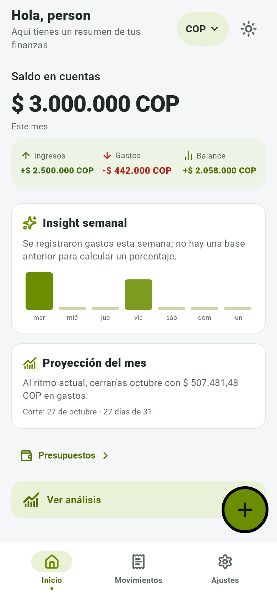
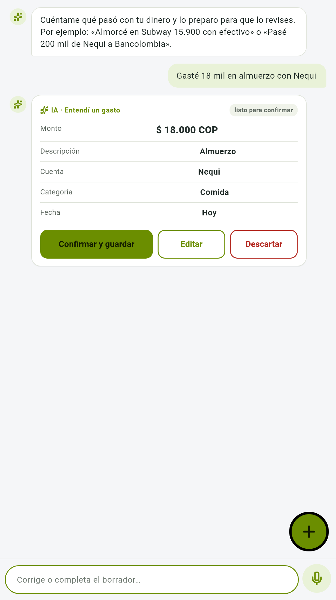
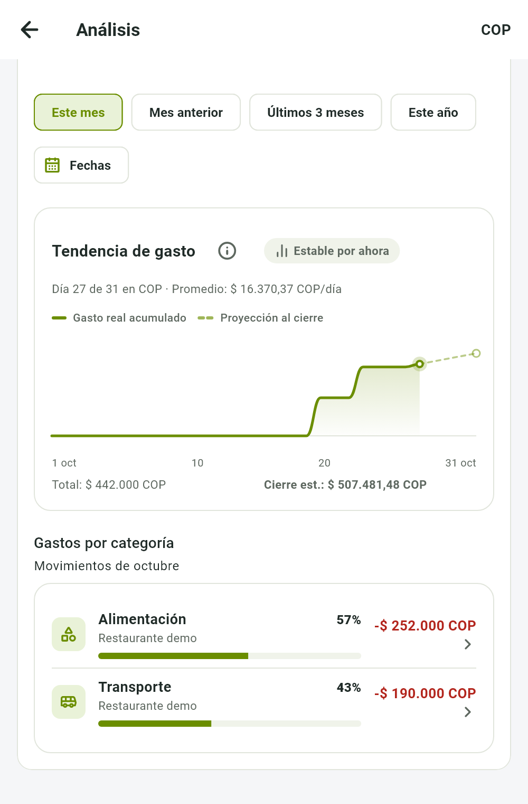
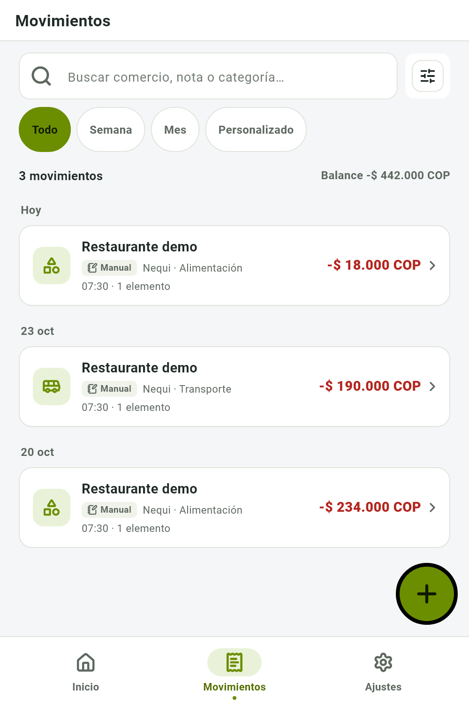
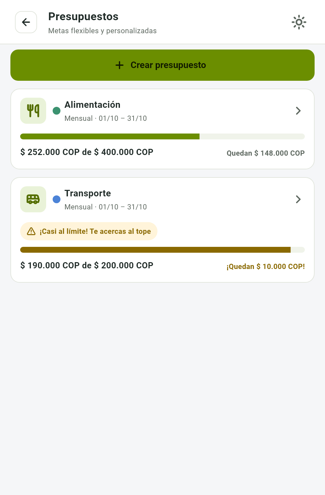

Finance AI
Aplicación móvil para el registro y análisis de gastos personales con asistencia de IA para la captura automática de gastos
- David Fernando Gonzalez Soler
- Maicol Estiven Fonseca Muñoz
- Ivan David Giraldo Garavito

Problema y justificación
En cada compra
Monto, cuenta,
categoría y fecha
Registrar un gasto exige completar y revisar esos datos una y otra vez.
Al final de la semana
¿En qué se fue
mi dinero?
Un registro incompleto dificulta responder.
La captura asistida facilita el registro y conecta los gastos con su análisis.
Objetivo general
Desarrollar una aplicación móvil para el registro, la categorización y el análisis de gastos personales, con asistencia de IA para la captura automática de gastos, aplicando la metodología CDIO, con el fin de reducir el esfuerzo de captura de los gastos y contribuir a la formación del hábito de control financiero en los usuarios.
Objetivos específicos
Definir alcance, requisitos funcionales y no funcionales, y el flujo de confirmar, editar o descartar.
Definir arquitectura, modelo de datos y mockups de captura y confirmación.
Capturar gastos con IA por foto, voz o texto y permitir su confirmación.
Mostrar gastos agrupados por categoría en el período seleccionado.
Validar con pruebas funcionales y una encuesta de usabilidad con estudiantes de la Universidad de Cundinamarca.
Propuesta tecnológica
Flutter
Captura y revisión
FastAPI
Valida y ejecuta las
operaciones financieras
- Campos del gasto
- Cuenta y categoría
PostgreSQL
Datos y movimientos por usuario
Modelo de IA
Interpreta texto y recibos
Solo propone, no guardaCaptura asistida
- 1CapturasTexto, recibo o dictado.
- 2RevisasMonto, cuenta y categoría.
- 3ConfirmasEl movimiento queda registrado.

Interfaz actual · datos de demostración
Gastos por categoría y período
- AlimentaciónRestaurante demo57 %−$ 252.000
- TransporteRestaurante demo43 %−$ 190.000
Elige el período

Interfaz actual · datos de demostración
Movimientos y presupuestos
Búsqueda e historial
Progreso y alertas por categoría


Interfaz actual · datos de demostración
Conclusiones
- 1
La aplicación integra el registro de gastos con el historial y su análisis por categoría.
- 2
La captura asistida produce una propuesta que la persona revisa, edita o confirma.
- 3
Los movimientos confirmados alimentan las consultas y el seguimiento de presupuestos.
Probemos con la app real
El mismo recorrido de las diapositivas, ahora funcionando de principio a fin.
Modelo de datos: el libro de movimientos
Aislamiento por usuario con llaves foráneas compuestas en la base de datos. La fuente de captura distingue manual, texto IA y recibo IA.
Ejemplo ilustrativo · cuenta Nequi
La transferencia mueve el saldo pero no cuenta como gasto ni ingreso.
De palabras a una propuesta confiable
Ejemplo ilustrativo
El modelo devuelve:
Anclaje: «Nequi» y «Bancolombia» coinciden con tus cuentas ⇒ se propone una transferencia, no un gasto.
Salvaguardas
- Validación: los nombres propuestos se comparan con tus cuentas y categorías
- Umbral configurado ≥ 0,8: revisión de un toque; menos, revisar con cuidado
- Una sola pregunta corta, con opciones, solo ante duda real
- Entre tus cuentas ≠ gasto; moneda dudosa: se pregunta
- Texto no confiable: defensa contra prompt injection
- Respaldo: segundo proveedor, límites de tiempo y uso; si cae la IA, siguen los formularios
Modelo: LLM vía API (Gemini o DeepSeek, intercambiables). Integración: ingeniería de prompts y validación determinista.
Más allá del texto: recibos y voz
Foto de recibo
- 1
Foto (JPEG, PNG o HEIC, hasta 10 MB)
- 2
Se normaliza y comprime en el servidor
- 3
LLM con visión → JSON estricto: comercio, fecha, total impreso, moneda, medio de pago, categoría sugerida, ítems
- 4
Validación: defensa anti-inyección y verificación aritmética
- 5
Revisión: editar, reintentar o aceptar. El total impreso se conserva
Voz
- 1
Pulsas el micrófono y hablas
- 2
El reconocimiento ocurre en el dispositivo (Android: reconocedor local · Windows: SAPI)
- 3
La transcripción entra al mismo flujo de texto de la IA
- 4
Revisión: aceptar, editar o descartar
La captura termina en una propuesta que el usuario revisa y confirma.
Seguridad y calidad del software
Seguridad y privacidad
- Contraseñas con Argon2
- Acceso de 15 min con credenciales renovables rotativas
- Aislamiento de los datos de cada usuario, también en la base de datos
- Reportes de error con datos sensibles filtrados
- Claves de IA en el servidor
- Reconocimiento de voz en el dispositivo
Calidad
- CI con lint, tipado estricto, pruebas y auditoría de dependencias
- Umbral de cobertura del 80 % en integración continua
Verificaciones documentadas: 16 y 18 oct 2026